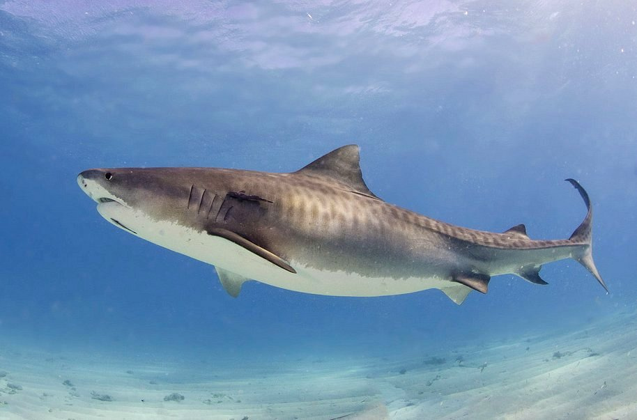

The tiger shark (Galeocerdo cuvier) is a species of ground shark, and the only extant member of the genus Galeocerdo and family Galeocerdonidae. It is a large predator, with females capable of attaining a length of over 5 m (16 ft 5 in). Populations are found in many tropical and temperate waters, especially around central Pacific islands. Its name derives from the dark stripes down its body, which resemble a tiger's pattern and fade as the shark matures.
The tiger shark is a solitary, mostly nocturnal hunter. It is notable for having the widest food spectrum of all sharks, with a range of prey that includes crustaceans, fish, seals, birds, squid, octopuses, sea turtles, sea snakes, dolphins, and even smaller sharks. It also has a reputation as a "garbage eater", consuming a variety of inedible, man-made objects that linger in its stomach. Tiger sharks have only one recorded natural predator, the orca. It is considered a near-threatened species because of finning and fishing by humans.
- Wikipedia